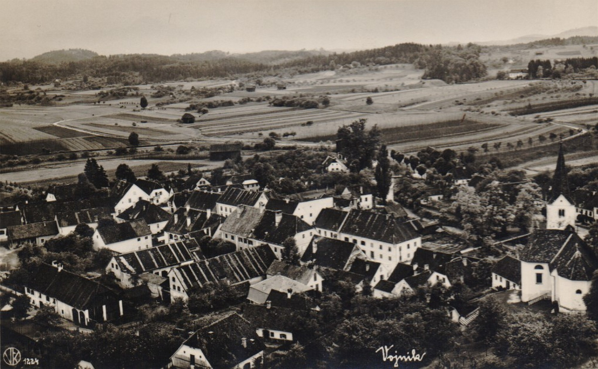
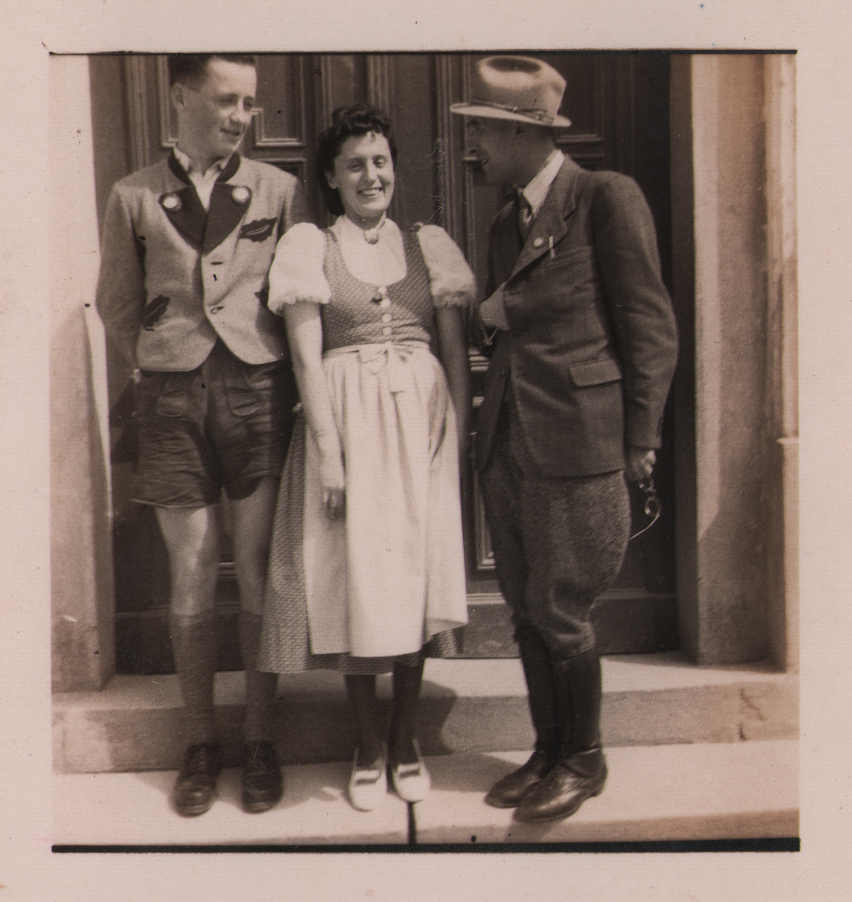
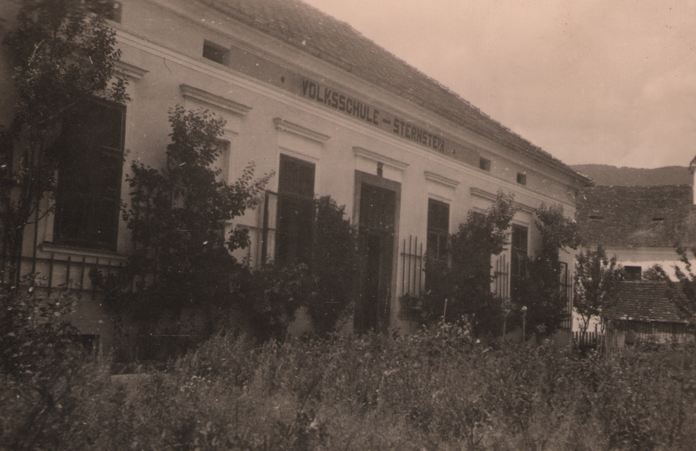
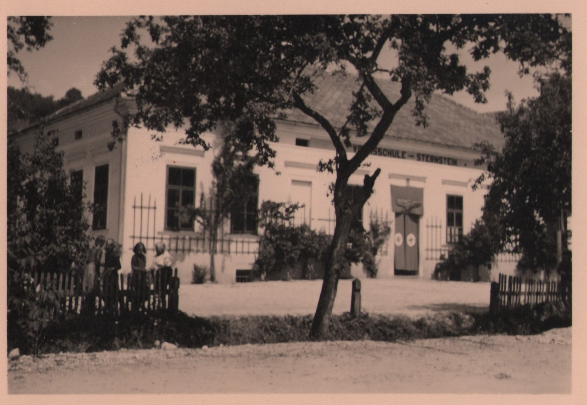
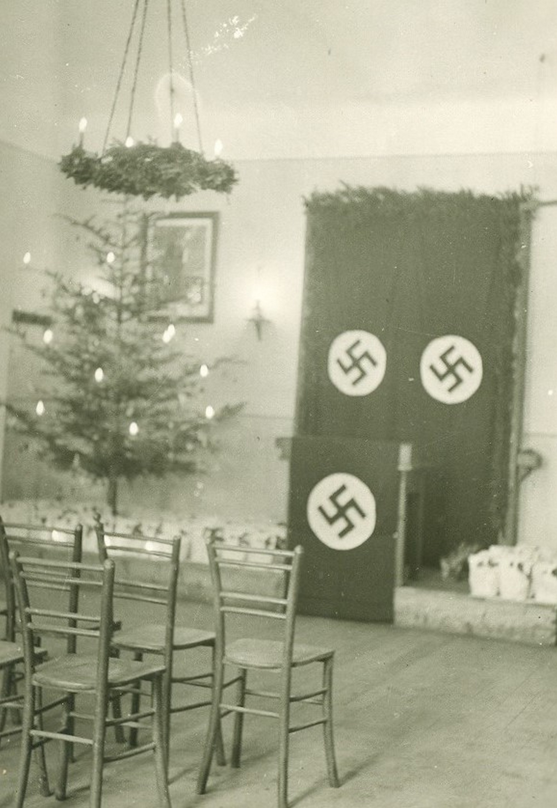
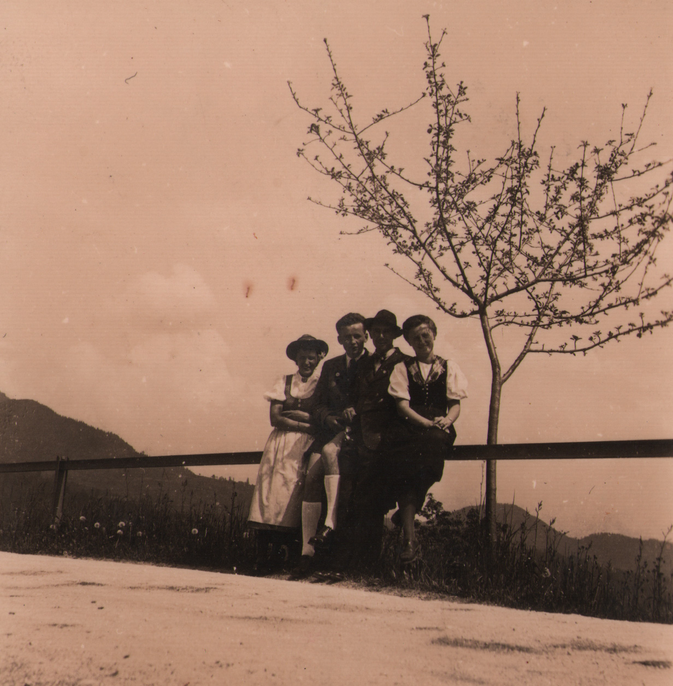
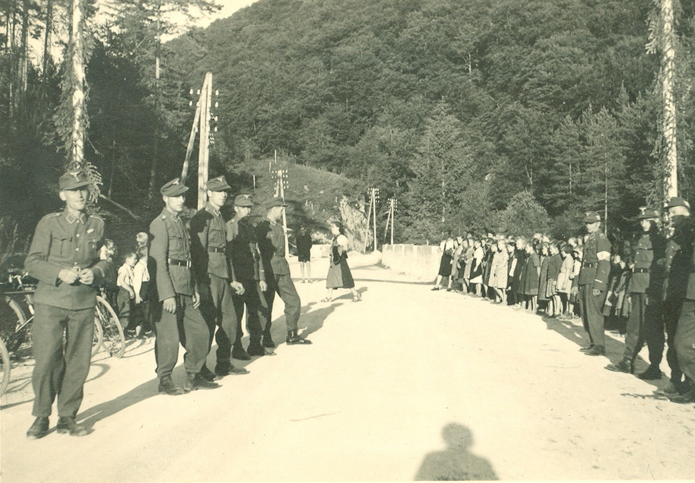
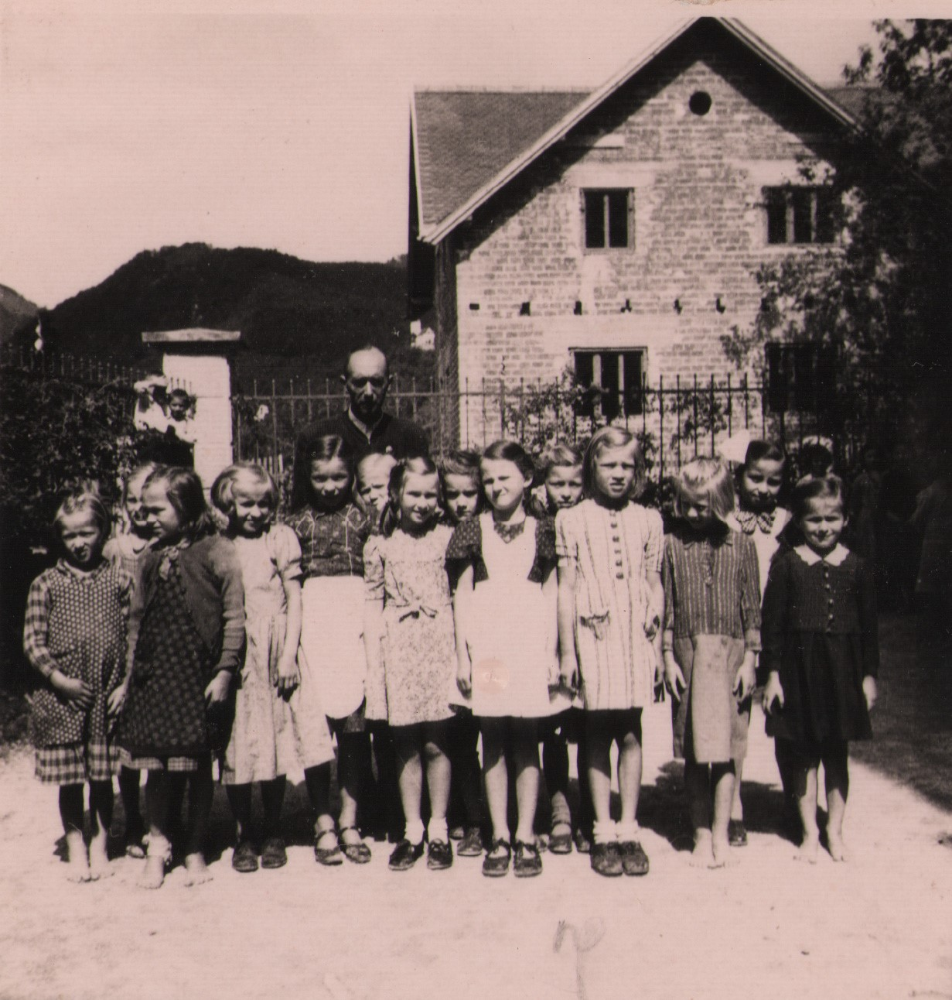

1Šolske kronike so že od svojega nastanka nenadomestljiv zgodovinski vir, ki razen informacij o šoli, ki jo je vodila, ponuja precej širšo sliko o utripu v nekem okolju, o vsakdanjem življenju lokalnega prebivalstva, njegovem predstavnem svetu in sistemu vrednot. Zgodovinarji tudi s pomočjo tovrstnih virov gradijo védenje o nekem dogodku, dogajanju, procesih. Pri osvetlitvi obdobja druge svetovne vojne in okupacije, ki je v temeljih pretresla slovensko družbo, so nam v pomoč šolske kronike kroniki osnovnih šol Frankolovo, Vransko in Vojnik. V njih se skriva obilo zanimivih impresij in pričevanj »malih ljudi« o »velikih dogodkih«.
2Ključne besede: druga svetovna vojna, šolske kronike, okupacija, Štajerska, Vojnik, Vransko, Frankolovo
1School chronicles have been published since their inception an irreplaceable historical source which, in addition to providing information about the school that ran it, offers a much broader picture of the pulse of an environment, of the daily life of the local population, its imagined world and value system. Historians also use such sources, historians build knowledge about an event, a development, a process. At shedding light on the period of the Second World War and the occupation, which is fundamentally which shook Slovenian society, school chronicles, chronicles of elementary schools Frankolovo, Vransko and Vojnik. They contain a wealth of interesting impressions and testimonies of "little people" about "big events".
2Keywords: World War II, school chronicles, occupation, Štajerska, Vojnik, Vransko, Frankolovo
1Šolske kronike so že od svojega nastanka nenadomestljiv zgodovinski vir, ki razen informacij o šoli, ki jo je vodila, raziskovalcem ali (zgolj) radovednežem posreduje precej širšo sliko o utripu v nekem okolju, o vsakdanjem življenju lokalnega prebivalstva, njegovem predstavnem svetu in sistemu vrednot. Zgodovinarje po navadi bolj od trajnejših procesov pritegnejo reakcije skupnosti na prelomnico, na silovit dogodek, ki svet »vrže s tečajev«, da (tudi) s pomočjo tovrstnih virov gradijo védenje o nekem fenomenu »od spodaj navzgor«.
2Taki vseobsegajoči cezuri sta bili zagotovo druga svetovna vojna in okupacija, ki je v temeljih pretresla slovensko družbo. Zlasti ljudje z območja pod nemško zasedbo so se čez noč znašli v vrtincu sprememb, ki so z veliko naglico preoblikovale družbo, v kateri so živeli. Poleg preloma z obstoječo politično ureditvijo in uveljavitvijo nacističnega avtoritarizma so Slovence na Štajerskem prizadeli tudi načrtovana germanizacija in izseljevanje, internacija in fizično uničenje.
3Za izvedbo germanizacije in uvajanje novega političnega sistema je okupator posegel po že preverjenih orodjih – množičnih organizacijah ter indoktrinaciji mladine. Navdušenje nad nacizmom naj bi tako na Štajerskem budila organizacija Štajerska domovinska zveza (Steirischer Heimatbund; ŠDA) s svojo mladinsko vejo, Nemško mladino (Deutsche Jugend; NM). A germanizacija in raznarodovanje sta se pričela že pred ustanovitvijo omenjene organizacije in njene mladinske podružnice.
4Rekrutiranje nemškega učiteljstva za poučevanje na Spodnjem Štajerskem se je odvijalo po organizaciji Ehrendienst im Unterland, ki je poskrbela za kadrovsko izpopolnitev treh akcijskih skupin za prevzem šolskega sistema na Spodnjem Štajerskem, ki so bile ustanovljene v začetku aprila. V prvi skupini je na Spodnjo Štajersko prišlo 15 šolskih nadzornikov, usposobljenih blizu Gradca. Prihodu prve skupine so sledile aretacije in izgoni slovenskega učiteljstva, s čemer so pridobili »prosta delovna mesta« za zaposlitev drugih dveh skupin. V drugi skupini je bilo 150 učiteljev, ki naj bi organizirali šolstvo po posameznih občinah, v tretji pa so bili učitelji za posamezne šole. Fran Roš v svojem zapisu omenja, da je 25. aprila 1941 prišla na Štajersko večja skupina učiteljev iz Avstrije, ki so se spotoma ustavili na tridnevnem zborovanju v Svečini oziroma na Betnavi,1 kjer jih je v okviru svojega obiska na Spodnjem Štajerskem obiskal tudi Hitler. V treh tednih je iz Avstrije prišlo 860 učiteljev, k vzgojnemu delu pa so pritegnili tudi 80 domačih folksdojčerjev ter 153 maturantov z avstrijskih učiteljišč, tako da je skupno število nemških učiteljev kasneje naraslo na 1235.2
5To je opis stanja na višji – »okrožni« in »deželni« ravni, kako pa je nemški prevzem osnovnega šolstva potekal na najnižji ravni, na ravni posamezne šole? Podobo o tem si bomo skušali ustvariti s pomočjo šolskih kronik treh osnovnih šol s celjskega območja – osnovnih šol Vransko, Vojnik in Frankolovo.
1V občini Vransko je leta 1931 živelo 1205 prebivalcev.3 V trgu so živeli 603 ljudje, osnovno šolo pa so imeli od leta 1806.4 31. marca 1941 je imela šola sedem temeljnih oddelkov, tri vzporednice in en pomožni oddelek za manj nadarjene,5 nanjo pa je bilo vpisanih 396 otrok, ki jih je poučevalo 13 učiteljev in učiteljic, katehet pa je bil domači župnik Franc Bohanec.6 V tem šolskem letu je bila šola iz šest- razširjena v sedemrazrednico, v sedmi razred pa so bili vključeni učenci, ki so šolo obiskovali sedmo in osmo šolsko leto.7 Med drugo svetovno vojno je bilo Vransko (politična) občina v celjskem okrožju,8 po popisu prebivalstva dne 29. novembra 1942 pa je v njej živelo 2608 moških in 1355 žensk.9 Zaradi svoje lege ob glavni komunikaciji med Celjem in Ljubljano so bili na Vranskem in v okolici nameščeni številčni policijski in vermanski oddelki,10 leta 1943 pa je na Vranskem potekalo šolanje vermanov in rezervnih policistov.11
1Naselje, poimenovano po slovenski verziji imena graščine Sternstein, je nastalo z združitvijo zaselkov Loka in Stražica. Prva šola je bila leta 1816 ustanovljena v Loki, leta 1937 pa je imela 4 oddelke.12 Na frankolovski šoli je v zadnjem predvojnem šolskem letu poučevalo pet učiteljev in učiteljic (ravnatelj Ignac Pejha, Marjana Pejha, Vida Štukelj, Mira Ravbar in Marija Hrabalek), verouk pa je učil župnik Alojzij Simčič.13
1Prva omemba šole v Vojniku sega v leto 1760. Pouk je potekal najprej v poslopju špitala, pozneje v kaplaniji, od leta 1815 do 1904 v najetih prostorih, nato pa v novem poslopju, zgrajenem na zemljišču, ki ga je občina kupila od cerkve. Šola je leta 1856 postala dvo-, leta 1873 tri-, leta 1886 pa štirirazredna. Leta 1895 je bila v Vojniku odprta tudi nemška ljudska šola, ki je že leta 1906 postala trirazredna; slovenščina je bila le učni predmet, in to šele od leta 1908.14 V Vojniku (trg z okolico) je leta 1931 živelo 1818 moških in 2015 žensk, 29. novembra 1942 pa 1654 moških in 1946 žensk.15
2V zadnjem predvojnem šolskem letu so na vojniški šoli poučevali: Franc Mlakar (ravnatelj), Tilka Požar, Ema Lapajne, Marija Brglez, Marica Kvac, Mara Samsa, Pavla Hameršak, Drago Rebernik, Julijan Šinigoj ter Ana Smolnikar.16

Hrani: MnZC, Zbirka Razglednice, PR-80651Vsi kronisti17 so razmere pred okupacijo v svojih krajih opisovali precej podobno – v kontekstu izrazite premoči nemškega militarizma so opažali nepravilen in nezadosten odziv jugoslovanskih lokalnih in državnih oblasti ter kritizirali popustljivost do agresivne »pete kolone« (Kulturbunda) in njenega poveličevanja nemške vojske in države.
2Na Vranskem so
»[n]ervoznost povečevali še petokolonaši, ki so načrtno pripravljali tla novim dogodkom in novemu stanju. Podtalno rovarjenje proti državi in njenim upravam je rušilo avtoriteto. Na drugi strani so pa oblasti same pripomogle k nezadovoljstvu in nezaupanju. Proti sovražni propagandi [oblasti] niso nastopale resno, sabotaže so ostale nekaznovane. Največ nezadovoljstva so povzročale vojaške oblasti; tu je vladal pravi kaos. Vpoklicani so bili slabo oskrbovani, brez zaposlitve prepuščeni sami sebi in demoralizirajoči propagandi.«18
36. aprila 1941 se je torej zgodilo neizbežno: »[O]b 7. uri zjutraj so nemška letala prvič preletela slovensko ozemlje. Bombardirala so progo pri Celju in Zidani Most. […] Narodno zavedni moški so se prostovoljno javljali v prostovoljske oddelke, narodni izdajalci pa so visoko dvigali glave in z odprtimi rokami čakali nemške 'odrešitelje'.«19
4Na vseh šolah so končali pouk že 1. aprila 1941 in tesnobno čakali na razplet dogodkov. V Vojniku je domačin, nemški simpatizer Ivan (Žani) Kowatsch, v noči z 10. na 11. april streljal na umikajoče se jugoslovanske vojake, »naši oddelki [pa] so ga ujeli in ga tudi pravično sodili«.20 Na veliki petek (11. aprila) so se »nemške tolpe kot hudournik valile po državni cesti skozi Frankolovo«, zavzele Vojnik ter zajele tudi šest srbskih vojakov, ki so se umikali čez Frankolovo.
5V Vojnik so že prvi teden prišli pripadniki pomožne policije in žandarmerije, (začasni) župan pa je postal dr. Franz Premschak.21 Oblast na Frankolovem je prevzel prvi nemški župan Fritz Kotnik, ki je za potrebe občinske uprave zaplenil učiteljsko stanovanje in izselil stanovalce ter prevzel šolski inventar. Frankolovskega župnika Alojza Simčiča, ki je na veliko noč (13. 4.) opravil še zadnjo slovensko pridigo, so nekaj dni kasneje med vožnjo s kolesom v Stranice prestregli in aretirali Himmlerjevi spremljevalci22 ter ga odpeljali v Stari pisker, 22. aprila pa so s skupino zavednih Slovencev aretirali ravnateljski par Pejha ter učiteljico Miro Ravbar. Aretirane so odvedli v vojniški Sokolski dom in nato v Celje, od koder so jih preko Maribora izgnali v Srbijo in na Hrvaško.23 Hitlerjev rojstni dan 20. aprila je bil usoden za učitelje vojniške šole – aretirali so Tilko Požar, Emo Lapajne, Marico Kvac, Maro Samsa, Draga Rebernika, Julijana Šinigoja in kateheta Martina Lupšeta, ki so jih po večmesečnem zaporu izgnali.24
6Fritz Kotnik je županoval na Frankolovem od 19. aprila 1941, sedež županstva pa je bil v stari ljudski šoli. Že 9. septembra 1941 je občino prevzel vojniški župan ing. Franz Steinberger,25 s čemer je Frankolovo izgubilo občinsko samostojnost.26
7Na velikonočno soboto (12. aprila) so doživeli pojav prvih nemških izvidnic v Savinjski dolini; 16. aprila se je na Vranskem pojavila pomožna policija, 17. aprila je prevzel občinsko upravo nemški župan, dan kasneje pa delegat šolo.27 Na Vranskem so
»v dneh od 21. do 27. aprila zaprli Kramar Marijo, Puncer Marijo, Pungartnik Antonijo, Rožanca Franca, Špan Marijo, Sevnika Julija, Štravs Berto in Milana, Ljubič Ljudmilo [in] kateheta Bohanca Franca. […] Šola, kamor so prignali še nekatere učitelje iz sosednih šol in duhovščino, jim je bila prvi zapor, dokler jih niso prepeljali v Celje, od tod pa z do tedaj še doma ostalimi družinami vred na Hrvatsko ali v Srbijo. V tako očiščen kraj so prihajali učitelji in uradniki iz Nemčije.«28
8Župan Vranskega je postal Franz Wagner iz Mürzzuschlaga.29 Kronika vsebuje kar nekaj zapisov, ki slikajo precej napete odnose med nadučiteljem Liebscherjem in županom.
9»Manjka sodelovanje med krajevnim vodstvom in šolo, zlasti sodelovanje z NM, ker krajevno vodstvo ne razume, da mora biti mladina na prvem mestu. O kakršnikoli spodbudi in podpori ni govora,«30 je zapisal kronist v šolskem letu 1941/42, naslednji vpis pa je še precej natančnejši: »1. 6. 1942 so nam prepovedali uporabljati primerno pot na igrišče. Vodstvo krajevne skupine varuje nekaj gred z zelenjavo, ki so bile zaradi uporabe poti malo poškodovane, in se ne vpraša, ali bomo zaradi že tako omejenega časa za pouk igrišče sploh lahko uporabljali.«31
10Sicer se je pa podobna zgodba ponovila tudi na Frankolovem, kjer je pragmatični (vojniški) župan Steinberger septembra 1941 ravnatelju pojasnil, da »so gospodarske razmere na Frankolovem zelo slabe in imajo kmetje slabo rodovitno zemljo,« zaradi česar se je morala šola odreči travnatemu igrišču ob cesti …, še dobro, da so dobili v zameno zaplenjeni župnijski travnik.32 Vojniški šoli so sicer kot telovadnico sprva dodelili dvorano leta 1938 zgrajenega Sokolskega doma, a so bile v njej vedno znova prireditve, tako da je bila polna klopi in sedežev in je »služila samo Heimatbundu«, kot so zagrenjeno zapisali v kroniki.33 Od Steinbergerja (za šolo) načelno ni bilo »problem dobiti denarja«, vendar pa sam »nikakor ni hotel prevzeti skrbi za [njeno] vzdrževanje, modernizacijo in olepšanje«.34
1Na Vransko sta 16. maja kot interventna učitelja35 prispela nadučitelj Heinrich Liebscher in pomožni učitelj Josef (Sepp) Hoffmann ter naslednji dan prevzela šolo, ki je
»bila zaradi srbske vojske in političnih zapornikov,36 ki so bili nastanjeni v njej, zelo uničena. Od interventnih učiteljev se je zahtevalo, da čimprej usposobita šolo, odstranita slovenski napis in namestita nemškega. S pomočjo dveh slovenskih učiteljev sta pregledala, prevedla in popisala celotno dokumentacijo ravnateljstva; prevedena in popisana je bila tudi dokumentacija posameznih razredov (katalogi, dnevniki in redovalnice)«.37
2Med spisi ravnateljstva so našli seznam učencev po razredih in letnikih, ki jim je služil pri popisu učencev. V soboto, 17. maja 1941, se je začel pouk, ki se ga sicer še niso udeležili vsi učenci, vseeno pa so učitelji z njimi naredili nekaj govornih in disciplinskih vaj. Do konca šolskega leta so učenci pouk pridno obiskovali, učitelji pa so otrokom toliko približali nemški jezik, da so se »lahko z njimi konec šolskega leta že pogovorili najnujnejše«. Poleg Liebscherja in Hoffmanna so na šoli poučevale še: Maria Heber, Gabriele Lenz, Maria Koretič in nadučiteljica Martha Zebinigg.38 Nekaj težav je bilo z odsotnim in bolehnim ravnateljem Liebscherjem, ki ga je najprej nadomeščal Johann Heinrich Hölling, nato Maria Heber, po njeni poškodbi pa žalski nadučitelj Wilhelm Fritz.39 Liebscher je bil novembra 1942 zaradi bolezni razrešen, ravnateljevanje pa je prevzel Franz Mörth,40 ki ga je 1. oktobra 1943 zamenjal SA-jevski major41 Oswald Mejak.42

Hrani: SI ZAC 8913Vojniška šola je bila sprva zgolj za 10- do 14-letne dečke43 odprta že 28. aprila 1941. Prvi trije učitelji, ki so poleg matične oskrbovali še šole na Frankolovem in v Novi Cerkvi, so bili: ravnatelj Arthur Jansky, Heinrich Liebscher in Franz Sembacher.44 Vojniške nemške učiteljice, ki so prišle za njimi, so se pritoževale zlasti nad slabimi stanovanjskimi razmerami; eno so nastanili pri bivšem ravnatelju Mlakarju – ta je smel obdržati službeno stanovanje – drugo v zasilni tujski sobi v gostilni Ban, tretja (zamudnica) pa je prve tri noči prespala na »divanu« v šoli, nato jo je za 14 dni k sebi vzela neka »folksdojčerka«, končno pa je pristala pri Banu, potem ko se je njena kolegica preselila na boljše. Tudi jedle so učiteljice sprva pri Banu, nato pa so se 15. junija preselile na hrano h gostilničarki in kavarnarici Fani Kasch. Septembra 1941 je bilo stanovanjskih zadreg za nemške učiteljice konec, saj so se lahko končno preselile v zaplenjena učiteljska stanovanja.45 V Vojniku so poleg ravnatelja Janskyja do konca šolskega leta 1940/41 delovali naslednji učitelji: Trude Steinberger, Hilde Glanz, Margarete Stermitzer, Anna Schmitt, Else Hummel,46 Julia Senitza in Karl Schwarz, ki so potrebovali obilo poguma in navdušenja, če so hoteli »opraviti svojo nalogo in narediti Spodnjo Štajersko nemško«.47
4Frankolovski kronist je o prevzemu šole zapisal:
»Oblastniki bivše jugoslovanske države so hoteli z vsemi sredstvi slovenizirati Spodnjo Štajersko in so zato na to območje nameščali fanatične, do vsega nemštva sovražne učitelje. Samo po sebi je razumljivo, da ti ljudje odslej niso več mogli ostati med Spodnještajerci. In tako se je zgodilo tudi, da so nekdanjega nadučitelja Pejho skupaj z ženo in učiteljico Ravberjevo spet poslali tja, od koder so prišli. Preostali dve učiteljici sta lahko ostali na Frankolovem. V okviru posebne akcije je bila z 8. junijem 1941 dodeljena ljudski šoli na Frankolovem pomožna učiteljica gdč. Valerie Schuh (prej je službovala v Riedlingsdorfu na Štajerskem), njej je sledila učiteljica gdč. Hedwig Sommerbauer iz Hartmannsdorfa pri Gleisdorfu (11. junija 1941). Obe učiteljici sta se znašli pred velikim kupom nalog: morali sta najti stanovanje, kar v danih okoliščinah ni bilo enostavno, si zagotoviti prehrano, razsvetljavo ipd. in se istočasno pripraviti na začetek pouka. 18. junija 1941 je bil za ravnatelja prestavljen sém učitelj Ludwig Toth, ki je že od 11. maja služboval na ljudski šoli na Zgornji Ponikvi.«48
5Toth je »po srbskem vzoru našel zanemarjeno šolo z zanemarjenimi učenci«.49 Pouk je obiskovalo 161 učencev. Tudi tu se je »nemški vzgojitelj pri poučevanju soočal z nenavadnim, neznanim, tujim, saj so učenci znali govoriti samo slovensko in niso razumeli niti besede nemško«, a so si »z igro in petjem […] kmalu pridobili njihova srca in jih navdušili za šolo«.50
627. junija 1941 je Ludwig Toth od bivšega nadučitelja Rudolfa Seršena prevzel šolo (šolske in stanovanjske prostore, vrt, inventar, administracijo, šolsko kroniko ipd.) v Črešnjicah, ki so jo do 12. januarja 1942 in zaposlitve dveh mladih učiteljev (Aloisa Karnerja in Franza Hollenthannerja) oskrbovali s frankolovske. Črešnjiško šolo so sicer ponovno zaprli že 16. marca 1942 (najprej so premestili Hollenthannerja, nato pa je bil Karner vpoklican v vojsko)51 in je ostala zaprta do 16. novembra 1943.52 Totha, ki je bil 8. maja 1942 vpoklican v vojsko,53 je (po kratkotrajnem namestništvu Valerie Schuh) avgusta 1942 kot ravnateljica nasledila učiteljica Karolina Bucher.54


Hrani: SI ZAC 13181Ko listamo zapise nekaterih nemških kronistov (kronistk!) o krajih, šolah in ljudeh, na katere so naleteli na svojem novem delovnem mestu, se spomnimo potopisov pustolovskih raziskovalcev daljnih krajev in divjih, neciviliziranih plemen, ki so se (v tem primeru) skoraj do sredine 20. stoletja skrivali komaj 100 kilometrov od njih.55 V teh zapisih se prepletajo vtisi o žalostni zapuščini propadle države (kraljevine Jugoslavije), nerazvitosti krajev in zanemarjenosti ter popolni apatičnosti ljudi, ki jih niti izboljšanje lastnega položaja ne prisili v dejavnost … kar je (tudi) moč pripisati 23-letni balkanski vladavini. S sočnimi opisi lokalnih razmer postreže zlasti frankolovska kronika, ki se leta 1941 obregne ob šolski (ne)obisk: »Delo je oviralo in oteževalo tudi dejstvo, da je bil šolski obisk zelo slab. V srbski državi tega niso posebno resno jemali. Redno prihajanje v šolo je bilo za naše otroke nekaj tujega.« Učitelje pa je zgrozil še videz otrok: »[Z]aradi revščine, ki je bila posledica slabega gospodarjenja jugoslovanske države, so izgledali popolnoma zanemarjeno. Oblačila so bila raztrgana, roke, noge, obraz umazani, celo telo pa polno mrčesa (bolh in uši).«56 V naslednjem šolskem letu je ravnatelj Toth pisal šolskemu poverjeniku Dukarju, da »prebivalstvo Frankolovega živi vseskozi v revnih razmerah, zato je bil obisk šole s slabšanjem vremena vedno manjši. Otroci niso imeli niti primerne obleke niti potrebnih čevljev. Otroci hodijo v šolo večinoma od daleč in po slabih poteh,« da »več kot polovica učencev nima čevljev«. Za zmanjšanje izostankov od pouka ter v pomoč otrokom in njihovim staršem je ravnatelj poverjeniku za šolstvo Celje – zahod predlagal spremembo urnika, po kateri bi imela nižja stopnja (do 3. razreda) pouk v ponedeljek, sredo in soboto, višja stopnja pa v torek, četrtek in soboto, vsakič po pet šolskih ur, »da bi zmanjšali obrabo čevljev in da bi lahko otroci čevlje tudi zamenjali«, čemur je Dukar ugodil.57 Učitelji so se zavedali, da je moč pot do src ljudi zgladiti z daril, zato je ravnatelj na Frankolovem 20. decembra 1941 priredil prvo »nemško božično proslavo«, na kateri so s pecivom in bonboni obdarovali 300 otrok, najbolj potrebnim pa so predali oblačila.58

Hrani: SI ZAC 13182Konec prvega popolnega šolskega leta 1941/42 so se na Frankolovem tako že pohvalili: »Doslej nam je uspelo toliko vplivati na zunanjost otrok, da prihajajo k pouku nekoliko bolj čisti in urejeni. Pri dečkih je izgled še zelo slab.«59 Občasne delitve oblačil seveda niso odpravile pomanjkanja, zato so otroci tudi pozimi 1942/43 ter 1943/44 ob mrazu in novem snegu ostajali doma. Nova ravnateljica Karolina Bucher pa je skušala najti tudi razlog za slab uspeh učencev in nedosežene učne cilje, ki je po njenem mnenju bil: »slaba nadarjenost večine učencev, ki so pogosto otroci pijancev in z redkimi izjemami tudi sami uživajo alkohol. Poučevanju o škodljivosti žganih pijač se le posmehujejo.«60
3Očitno so vransko šolsko kroniko pisali Slovencem precej bolj naklonjeni ljudje (Gabriele Lenz), saj so znali (oportunistično) pohvaliti »dva nekdanja slovenska učitelja, ki perfektno obvladata nemški jezik«61 in sta jim pomagala izvajati jezikovne tečaje, nemški učitelji pa so opazili tudi dober obisk na šolskih proslavah.62 Po drugi strani se v takih optimističnih zapisih lahko skriva več želje kakor resničnosti, saj si težko zamislimo, da se na Vranskem »vsi […] z veseljem odzovejo pozivu na nabor, vrnejo pa se pojoč in okrašeni s cvetjem« in da »ljudje vojsko spoštujejo in ji zaupajo«.63 Nedvomno so bile otrokom (in odraslim) všeč novosti, ki so bile prej na slovenskem podeželju redke – uporaba filma pri pouku, možnost ogleda filmskih predstav (z neizogibnimi filmskimi tedniki), kar je prinesla okupacija. V šolskem letu 1942/43 so imeli »projektor za učne filme […] na šoli dvakrat. Otroci so bili nad vsakim filmom navdušeni in so še dolgo govorili o tem«.64 Odraslim je bil namenjen »deželni potujoči kino«, ki je prišel v kraj enkrat mesečno in je »prebivalstvu omogoča[l], da [je] v Tedenskih pregledih v sliki spremlja[lo] veliki spopad narodov«, in »z zabavnimi filmi prinaša[l] v vsakdanjik malo spremembe«.65
4Včasih pa hiter pretok informacij okupatorjevi upravi ni koristil – »predvsem izguba Stalingrada je spet obudila panslavistične misli«.66
5Verjetno je na Vranskem uspelo ohranjati trden (nacionalsocialistični) okvir delovanja šole in učiteljstva zaradi namestitve ravnatelja Oswalda Mejaka, ki je bil steber »pravilne« usmeritve tako na šoli kot v kraju samem ter iniciator številnih prireditev in druženj otrok in starejših.
6Sicer »domača« vojniška ravnateljica Julia Senitza je zapis o šolskem letu 1942/43 sklenila s trditvijo, s katero so se strinjali številni njeni kolegi: »Na splošno je tukajšnje ljudstvo dobrodušno, požrtvovalno in se ga da zlahka usmerjati.«67
1Na vojniški šoli so imeli konec šolskega leta, ki se je »začelo slovensko in končalo nemško«68 (1940/41), v desetih razredih (od 1. do 5. po dve paralelki) 435 učencev.69 Tri tedne sicer štiritedenskih počitnic – od 15. avgusta dalje – so učitelji namenili dopustu doma, na »Starem Štajerskem« (Altsteiermark), zadnji teden pa so bile na vrsti priprave na novo šolsko leto, ko je vodstvo šole prevzela ravnateljica Elsa Gutmann. Poleg nje so tedaj učile še: Elsa Hummel, Marie Laufer, Trude Steinberger, Hilda Glanz in Julia Senitza. Dva »laična učitelja«,70 Wolfgang Hofbauer in Otmar Reiterlehner, ki sta drug za drugim delala na šoli, sta skrbela pretežno za NM. V tem šolskem letu je število učencev padlo na 341, paralelk pa je bilo osem.71 V šolskem letu 1942/43 je šolo le tri dni septembra vodil Klaus Tarnai, nato je postal ravnatelj Ferdinand Christian – oba so premestili iz Nove Cerkve in oba kmalu vpoklicali v vojsko – po kratkem medobdobju (Franz Karbaditz) pa je šolo prevzel Karl Geißler. Do konca šolskega leta sta ravnateljevala še Ferdinand Leher in Julia Senitza. Nova učitelja sta bila Hildegard Scherber in »laični učitelj« Alois Kleinschek.72 Učencev je bilo spet več – 465, razdeljeni pa so bili v šest razredov in enajst paralelk.73 Tudi v šolsko leto 1943/44 je šola stopila z novim ravnateljem – Josefom Szokolayjem, novima učiteljicama (Elso Hummel je nadomestila Anna Burkert,74 njo pa Gertrude Göbel) in skrbmi zaradi pogostega nastanjevanja policijskih enot. Konec šolskega leta je bilo v desetih paralelkah šest razredov in skupaj 447 učencev.75
2Frankolovsko šolo so do prihoda dveh nemških učiteljic 8. junija 1941 oskrbovali z vojniške – tam so popisali učence in v nekaj dneh izvedli sestanke s starši.76 Pouk za 161 učencev so na Frankolovem najprej organizirali v treh razredih: 1. razred (učiteljica Hedwig Sommerbauer), 40 učencev (3. šolsko leto), 2. razred (Valerie Schuh), 62 učenk (4.–8. šolsko leto), 3. razred (Ludwig Toth), 59 učencev (4.–8. šolsko leto),77 proti koncu šolskega leta pa so morali vključiti tudi mlajše otroke, zato sta učiteljici poučevali še v »pravem« 1. (Sommerbauer) in »pravem« 2. razredu (Schuh) – prvotni 1. razred je postal 3., prvotni 3. pa 4. (dve vzporednici, ločeni po spolu). Število učencev se je povzpelo na skupaj 263.78 V šolskem letu 1941/42 je pouk potekal v šestih razredih, pri čemer so bili v 6. združeni otroci, ki so pouk obiskovali šest, sedem ali osem let, šola pa je imela 301 učenca. Prioritete so še vedno ostajale enake: »Nemškega jezika ni bilo treba samo učiti, ne – še bolj je šlo za to, da ga otrokom priljubimo in jih vzgajamo v Nemce. Treba jih je bilo seznaniti z velikimi prelomnicami časa, jih navdušiti za firerja in nemško ljudstvo.«79 Konec šolskega leta so sicer ugotavljali, da so v »povprečju […] otroci tako napredovali, da se lahko z nami – sicer zelo preprosto, a vendar, pogovarjajo po nemško. […] Verjamem, da smo pridobili otroška srca in na nas ne gledajo več kot na tujce in sovražnike«.80
3Kljub trudu pa za vpis na glavno šolo ni bil zaradi pomanjkljivega znanja nemščine primeren nihče izmed učencev, ki so zaključili šolanje.81 Težave so bile tudi pri drugih predmetih: »1. razred: Učni cilj pri branju in računanju ni dosežen. 2. razred: Branje in računanje (brez uporabe stotiške tabele) še dela težave. 3. razred: Težkega seštevanja, merjenja in deljenja večjih števil niso do konca predelali. 4. razred: Pouk jezika in spoznavanje narave82 nista do konca obdelana. 5. in 6. razred: Učni cilj pri geometriji83 ni dosežen.«84 Starši so bili pred koncem šolskega leta 1942/43 povabljeni na obisk učne ure na osnovni šoli, a prišel ni nihče.85 Pesimizem prevladuje tudi ob koncu šolskega leta 1943/44:
»1. a: ne usvojeno branje tiskanih črk, poznavanje števil do 100 ni doseženo, 1. b: vrednotimo samo kot pomožni razred; usvojene je bilo le 1/4 učne snovi, 2. raz.: branje je še slabo (učne snovi v preteklem letu niso popolnoma usvojili), 3. raz.: snov iz jezikovnega pouka in celjsko okrožje niso popolnoma usvojili, merjenje in deljenje večjih števil je delno izostalo, 4. raz.: snov iz jezikovnega pouka ne usvojena, deljenje dvoštevilčnih števil pri vseh učencih še ni tekoče, 5., 6. raz.:86 pri realnih predmetih in geometriji učni cilj ni dosežen.«87
4Verjetno je bilo več uspeha pri telovadbi, ki si je z nemškim jezikom delila prvo mesto pomembnih vsebin pouka.88 Frankolovska kronika medvojne nemške šole se zaključi poleti 1944, ko je vodstvo šole že slutilo, da počitnice ne bodo običajne, in se je nanje dobro pripravilo. »Na ukaz šolskega svétnika smo najpomembnejše spise in najdragocenejša učila ter knjige, razen tega pa še metle, krpe za brisanje table, svinčnike in radirke po koncu šolskega leta spravili v Vojnik in to deloma shranili pri tov. Senitza,89 delno pa v sobi za učila na ljudski šoli. Župan nam ni mogel ponuditi nobenega varnejšega prostora.« Kljub temu so še računali na nadaljevanje pouka jeseni, »še posebej, če bi uspelo omejiti dejavnost tolp«.90
5Na Vranskem se je pouk v nemški šoli začel v soboto, 17. maja 1941, »ker je bilo obveščanje v tako kratkem času nemogoče, sicer še niso prišli vsi učenci. Vseeno [so] s temi otroki lahko naredili nekaj govornih in disciplinskih vaj«.91 Poslej so učenci bojda šolo »pridno obiskovali«.92 Zaradi pomanjkanja učiteljev so morali štirje vranski učitelji vsak dan učiti v po dveh razredih, »pri čemer so morali močno omejevati učne ure v posameznih razredih«.93 V šolskem letu 1941/42 je pet učiteljev na Vranskem poučevalo v 6. razredih (osmih oddelkih: 1., 2., 3. in 5. razred so bili mešani, 4. in 6. pa ločena po spolu).94 Učna snov tega leta še ni bila vezana na noben učni načrt, bistvena pa sta bila pouk nemškega jezika in nacionalna politična vzgoja.95 Na začetku šolskega leta je obiskovalo šolo 357, na koncu 316 učencev, med njimi pa jih 83 razreda ni izdelalo.96

Hrani: SI ZAC 8916Leto kasneje – 2. julija 1943 ob koncu šolskega leta – so tudi na Vranskem priredili »razstavo dosežkov. Razstavili [so] risbe in pisne izdelke«. Odziv pa je bil popolnoma drugačen kakor na Frankolovem: »Otvoritvi, ki so se je udeležili starši učencev, je sledil obisk pouka v edini učilnici. Starši so imeli priložnost spoznati delo v šoli. Prišli so številni starši.«97
7Podobno optimistično so na šoli vrednotili napredek učencev:
»Učni cilj v 1. b razredu smo dosegli pri računanju, branju in pisanju. V 1. a, ki je bil fantovski razred, učnega cilja nismo dosegli. Ta razred je prizadela petkratna menjava učitelja, pa tudi struktura učencev ni ugodna. […] Tudi v nižjih razredih smo opozarjali na našega firerja, njegove vojake, našo veliko domovino in vojno. […] Pri računanju smo učni cilj dosegli v vseh razredih, prav tako pri domoznanstvu v nižjih razredih. Veliko zanimanja so otroci na vseh stopnjah pokazali za risanje, petje in telovadbo, kjer smo dosegli lepe uspehe.«98
8Tedaj je na Vranskem pouk za 378 otrok potekal v popolni osemletki, konec šolskega leta 1943/44 pa je v sedmih razredih pouk obiskovalo 371 otrok.99 Novi ravnatelj Mejak je v skladu s svojo vojaško naturo očitno končal s prakso leporečenja, kar se pokaže v zapisu o obisku šolskega svétnika Erwina Dukarja 28. oktobra 1943, ko je (on ali Dukar?) trud razredničarke Else Hessinger ocenil z: »1. a in 1. b katastrofalno«.100
1Na Vranskem, Frankolovem in v Vojniku so organizirali tudi kmetijsko poklicno šolo, na kateri so učence, ki so sicer osnovno šolo že »prerasli«, poučevali kar osnovnošolski učitelji. Na Frankolovem so jo odprli 8. januarja 1942. Oba učitelja, Ludwig Toth in Hedwig Sommerbauer, sta do delitve poklicne šole na dva razreda – zaradi velikega števila učencev – poučevala po pet ur tedensko. Učitelj Toth je poučeval nemščino, nacionalno politično vzgojo, petje in telovadbo za fante, Hedwig Sommerbauer pa je prevzela telovadbo za dekleta. Pouk je na začetku obiskovalo 54 učencev. Zaradi povečanega števila učencev (74) je bila poklicna šola od 29. aprila 1942 razdeljena na dve vzporednici.101 V šolskem letu 1942/43 se je pouk na kmetijski poklicni šoli začel v drugi polovici oktobra. »Poklicna šola za fante je bila zaradi disciplinskih težav konec januarja v soglasju s šolskim svetnikom zaprta. Uspeh pouka niti pri fantih niti pri dekletih ni upravičil vloženega truda.«102 Leto kasneje je postalo jasno, da je
»prebivalstvo […] za kmetijsko poklicno šolo kazalo le malo zanimanja. Pisni opomini k pošiljanju mladine k pouku so bili večinoma neuspešni; pri tem je odigral svojo vlogo tudi vpliv band. Pri dekletih je bil učni cilj dosežen. Za praktično kuhanje in vse gospodinjske teme so kazale veliko zanimanje. Petje in telovadba sta jih zelo veselila. Fantje so pogosto manjkali, bili so leni, malomarni ter v znanju jezika daleč zaostajajo za dekleti.«103
2Vseeno pa so učitelji vztrajali in do 1. junija (za fante) oziroma 1. julija (za dekleta) 1944 izvajali pouk v dveh po spolu ločenih razredih.
3Na Vranskem je za kmetijsko izobraževanje najprej skrbel učitelj Sepp Hoffmann,104 v delo kmetijske poklicne šole, ki se je začelo novembra 1942, pa sta bila vključena Franz Mörth in Maria Koretitsch, ki sta poučevala en razred z 62 učenci. Januarja 1943 je poučevanje namesto Koretitscheve prevzela Erika Kogelnik. Obravnavali so računanje in gospodinjstvo oziroma kmetovanje; med drugim so posebej izpostavili položaj kmeta v velikonemškem rajhu. Učenci so spoznali velike osebnosti iz »naše zgodovine in najpomembnejše o našem življenjskem prostoru«.105 Šolski obisk je bil povsem zadovoljiv, a se je proti koncu šolskega leta zaradi del na polju nekoliko poslabšal.106 V šolskem letu 1943/44 je poučevanje na kmetijski šoli prevzel ravnatelj Mejak, ki je v enem razredu med 15. oktobrom 1943 in 1. aprilom 1944 poučeval 65 učencev in omenil »veliko udeležbo«, a zaradi političnih razmer (partizanskih akcij) le »bližnjih učencev«.107
1Od učiteljev, ki so jih poslali opravljat »častno službo« v »osvobojene« predele Spodnje Štajerske, so nacisti pričakovali veliko več kakor (zgolj) obravnavanje šolske snovi. Po ustanovitvi ŠDZ in NM so učitelje zaposlili pri izvedbi nemških jezikovnih tečajev, ki so bili obvezni za vse Slovence, ki so se želeli izogniti izgonu, in otroke, vključene v različne veje NM. Izbor učnega osebja je opravil Urad za ljudsko izobraževanje (Amt Volksbildung) ŠDZ v sodelovanju z Uradom za šolstvo (Amt Schulwesen).108
2Na Vranskem učiteljstvo z »uspešnimi« jezikovnimi tečaji ni poglobilo samo »jezikovnega znanja prebivalstva, ampak […] [je] vzpostavil[o] tudi tesno povezanost med učiteljstvom in prebivalci«109 Pravi zagon je prirejanje jezikovnih tečajev dobilo v naslednjem šolskem letu, ko se je prijavilo toliko slušateljev, da so »morali pritegniti tudi dva nekdanja slovenska učitelja, ki perfektno obvladata nemški jezik«.110
3Čas prirejanja tečajev so uskladili z navadami pretežno kmečkega prebivalstva, saj »so se začeli novembra in se končali s sezono kmetijskih opravil po veliki noči«. Prisilno spodbujeno zanimanje ljudi za jezikovne tečaje je sčasoma popuščalo, a očitno bolj med mladimi, saj so bili »tečaji za odrasle […] zelo dobro obiskani, jezikovni tečaji za mladino pa zelo skromno«.111
4Na Frankolovem so se 6. oktobra 1941 začeli jezikovni tečaji za odrasle, januarja 1942 pa obvezni jezikovni tečaji za mladino.112 Moške so v tečaje vključevali tudi v okviru oborožene formacije ŠDZ vermanšaft, o čemer je kronistka in začasna ravnateljica frankolovske šole Valerie Schuh pohvalno zapisala: »Vermanšaft, ki šteje 316 mož pod vodstvom sposobnega narednika113 Schibanza, odgovorno prihaja v službo [na urjenje] in na jezikovne tečaje. Trenutno se možje, kakor tudi drugi prebivalci Frankolovega, še zelo mučijo z nemškim jezikom. Občutek imam, da bodo možje, ko bodo obvladali nemški jezik, postali dobri in strumni nacionalsocialisti.«114

Hrani: SI ZAC 13185Vnema pri obiskovanju jezikovnih tečajev je, zahvaljujoč vedno hujšim porazom Nemčije, popuščala. V šolskem letu 1942/43, ki je prineslo preobrat na ruski in severnoafriški fronti, je bilo na Frankolovem »na enem izmed jezikovnih tečajev […] po predaji Tunisa vendarle slišati, da se ljudem zdaj ni treba več učiti nemščine«.115 Kljub temu so s prirejanjem tečajev nadaljevali do leta 1944, ko je kronistka lahko pohvalila vnemo deklet, saj so bili tečaji zanje dobro obiskani, fantje pa so ga obiskovali »tako maloštevilno, da so njihov jezikovni tečaj ukinili«.116
1Otroke so vključili v NM z dopolnjenim desetim letom, svečani sprejemi pa so se odvijali spomladi. Organizacija NM je s svojo strukturo obvladovala vsa za mladino pomembna področja (telovadbo, obrambno vzgojo, kulturo, tisk, propagando, socialno delo in upravo), zaposlovala pa je učitelje telovadbe, nazorskega šolanja ter petja.117 Prijavnice za vstop v NM so otroci izpolnjevali po šolah. Pred sprejemno komisijo so morali priti skupaj s starši (da so preverili njihov status v ŠDZ). Družina naj bi sprejem v NM proslavila kot družinski praznik. Najmlajši člani NM (Jungvolk) med 10. in 14. letom so postali »Pimpfi« (dečki) oziroma »Jungmädel« (deklice). S 14. letom so člane NM svečano »posvetili firerju«, z njihovim vstopom v vrste »prave« NM (fantje med 14. in 18. letom) ali deklet (»Mädel« so imenovali dekleta med 14. in 18. letom) pa se je »uradno« končalo tudi njihovo otroštvo. Najmlajše člane NM so zaposlili z igrami in petjem, mladino med 14. in 18. letom pa predvsem s telesno in svetovnonazorsko vzgojo.118
2Zaradi vsega naštetega sta bila vzpostavitev in vodenje NM na seznamu učiteljev vsekakor zelo visoko, zato ne preseneča, da je kronistka šole na Vranskem že ob zaključku šolskega leta 1940/41 ponosno zapisala: »Tudi na področju mladinske organizacije smo v kratkem času opravili veliko dela. Fante v ŠDZ je vodil pomožni učitelj in krajevni poveljnik Sepp Hoffmann, dekleta pa učiteljica in voditeljica skupine Gabriela Lenz. Oba sta požrtvovalno opravljala svoje naloge in uspelo jima je mladino navdušiti za nemško idejo in mladinsko organizacijo.«119 Prva »posvetitvena slovesnost NM«120 na Vranskem je bila 19. aprila 1942, prireditev je pripravil vodja NM Sepp Hoffmann, slavnostni govornik pa je bil član NSDAP121 Heinrich Liebscher.122 Na binkoštno soboto 1942 je vranska NM pripravila pohod v Braslovče in na Polzelo.123

Hrani: SI ZAC 08913Sredi decembra 1942 je dekliška NM pod vodstvom Marie Koretitsch priredila majhno prodajno razstavo igrač, ki so jih izdelali člani NM.124 V letih 1942, 1943 in 1944 so otroci svoje delo v NM predstavili na uspelih starševskih večerih, prvega, 15. marca 1942, naj bi se udeležilo kar 500 ljudi.125
4Pomoč pri delu NM so na Vranskem poiskali tudi izven šole – voditeljica najmlajših deklet je po dveh učiteljicah (Marii Koretitsch in Eriki Kogelnik) 1. aprila 1943 postala vzgojiteljica v vrtcu Hilde Mondschein,126 fantovsko NM pa je (po Gabriele Lenz, Seppu Hoffmannu in Franzu Haringu) leta 1944 vodil Karl Sorre, zaposlen pri Westnu v Celju.127
5Na Frankolovem je kronika o organiziranju NM bolj molčeča. Prvi zapis, ki jo vsaj posredno omenja, je povezan z zelo obiskanim in uspelim starševskim večerom 12. marca 1942, drugi s proslavo »dneva osvoboditve« 12. aprila 1942, ki se je je udeležila tudi »mladina ŠDZ«, teden kasneje (19. aprila) pa je frankolovska mladina v Vojniku sodelovala na slovesnosti ob zaobljubi NM. Frankolovski učenci so se 30. maja 1942 udeležili tudi državnih športnih iger (Hitlerjugend), njihovi uspehi pa so bili zaradi »dolgotrajnega slabega vremena in pomanjkanja igrišča majhni in skromni«128 (pomanjkanje treninga je onemogočalo boljše uspehe učencev pri športu tudi na Vranskem).129 Glavno delo v mladinski organizaciji sta prevzela ravnatelj Toth (krajevni vodja NM do vpoklica v vojsko maja 1942) ter učiteljica in kasnejša začasna ravnateljica Valerie Schuh, ki je vodila kar osem enot dekliške veje NM.130 Januarja 1943 je 6. razred frankolovske šole obiskala območna dekliška voditeljica Trude Nitsche,131 marca istega leta so v tednu NM mladinski voditelji in voditeljice v tem razredu prisostvovali pouku, izboljšali pa so se tudi rezultati otrok na športnih igrah NM.132 V šolskem letu 1942/43 je NM prikazala uspehe svojega dela na dveh vaških večerih,133 leta 1944 pa so »na preprosti, a dostojanstveni svečanosti ob sprejemu v Nemško mladino 26. 2.« otroci najprej dobili spominske listine, nato pa izvedli »starševski večer, na katerem so uprizorili dve pravljični igri: Sneguljčica in Kralj Drozgobrad. Igralci so poželi velik aplavz«.134 Frankolovski pravljična in lutkarska skupina sta na kulturnem tekmovanju osvojili prvi nagradi, dekliška ekipa pa drugo nagrado na športnem dnevu NM.135 Vsak vod136 je imel enkrat tedensko »domači večer«. Dekliška skupina137 je pozimi 1943/44 pripravila štiri delavnice,138 ki so bile zelo dobro obiskane, obravnavale pa so kuhanje, šivanje, predenje in nego dojenčka.139
1Čeprav je imela nemška vojska ob vdoru v Jugoslavijo sorazmerno malo žrtev, se frankolovska kronistka (ob treh padlih nemških vojakih v bližini Nove Cerkve) zaveda, da so padli »prispevali k temu, da se je Spodnja Štajerska lahko vrnila domov. Njihovi junaški grobovi so večne priče in pomniki velikega preobrata v tej prastari nemški mejni krajini«.140
2Prelomni vojni dogodki so v kronikah našli večji141 ali manjši odmev, nas pa vsekakor najbolj zanimajo odzivi na dogajanje v lokalnem okolju, ki je zaposlenim v okupatorski upravi in šolstvu dajalo vedeti, da so kljub formalni in kruti pacifikaciji ozemlja še vedno in vedno bolj na sovražnih tleh.
3To so kmalu občutili na vojniški šoli, kjer so že pet dni po svečanem začetku šolskega leta (27. septembra 1941) ostali brez nove šest metrov dolge zastave, ki so jo ukradli trije domačini (Franc Klančnik, Ivan Ahtik in Friderik Jurčak) ter jo skrili v zvonik – tatvino so pojasnili skoraj leto dni kasneje, ko je dejanje izdal eden izmed storilcev, ki je bil v celjskem preiskovalnem zaporu zaradi neke druge zadeve. Njegova mati je zastavo medtem iz strahu zažgala, fante pa so 22. julija 1942 v celjskem Starem piskru ustrelili kot talce.142
4Zanimiv zaplet je vezan tudi na tečaj Nemškega Rdečega križa (DRK), ki so ga spomladi 1942 organizirali na vojniški šoli. Predaval je vojniški zdravnik dr. Rudolf Mikusch, uspešno pa ga je končalo enajst tečajnikov (od štirinajstih), med njimi sta bili tudi dve učiteljici. Konec junija bi morali novi sodelavci DRK svečano zapriseči, a so dogodek odpovedali, »ker zanj ni bil pravi trenutek«, saj so ugotovili, da je bilo med tečajniki več partizanskih pomagačev. Enega iz vojniške skupine so zaradi tega že ustrelili.143 »V poletnih mesecih [1942] so se tudi v okolici Vojnika pojavili banditi. Pri kmetih in trgovcih so ropali živež in tobak,« je zapisala ravnateljica.144
5V frankolovsko šolsko kroniko se je taka mimobežna notica vtihotapila v šolskem letu 1942/43, ko v poglavju Šolska stavba naletimo na vpis: »Okna so bila večkrat zastekljena, a so jih kmalu nato, ko ni bilo pouka, neznani storilci spet razbili.«145 Leta 1943 se je med ljudmi začel krepiti dvom v zmago nemškega orožja: »Tisti maloštevilni ljudje na Frankolovem, ki so z nami, učiteljicami, govorili o vojnih dogodkih, so bili navdušeni nad uspehi naših vojakov in globoko prizadeti ob umikih ter zaskrbljeni zaradi izida vojne.«
6»Da je bil naš kraj doslej varen pred napadi banditov, je morda znak za to, da je prebivalstvo v večini na naši strani,«146 so učiteljice verjetno sklepale iz svojih stikov z ljudmi, z njimi pa so itak komunicirali le tisti, ki Nemcem niso bili sovražni.
7Kljub temu so se na Frankolovem ponavljali dogodki, v katerih lahko vidimo klasičen kriminal (vlom): »V noči s 25. na 26. oktobra [1943] je nekdo skozi okno vdrl v pritlično šolsko stavbo. Odprli so vrata zbornice. V predalih so očitno iskali denar, ker ni nič zmanjkalo.«147 Precej bolj zaskrbljujoča pa sta bila dogodka 4. maja in 2. junija 1944,148 ko »so banditi ponoči napadli naseljeno šolo, pri tem uničili dve firerjevi sliki, grozili učiteljici in si prisvojili različne predmete, med drugim vsebino šolske lekarne ter veliko zastavo s kljukastim križem. Pri prvem napadu so banditi pomazali zunanje zidove šole s slovenskimi besedami, imenom 'Tito' in komunističnimi znaki 'kladivo in srp'«.149 Pri tem je seveda šlo za napad na šolo kot ustanovo okupatorske uprave. V tem letu se je zaradi »okrepljene dejavnosti banditov« predčasno (1. julija) končalo tudi šolsko leto, ker se je šolski obisk junija zelo zmanjšal.150 Nemško učiteljstvo je za vedno zapustilo kraj, šolo pa so za nastanitev uporabljale policijske in vojaške enote.151
8Vransko je bilo zaradi svoje pomembne vloge pri obrambi ceste Celje–Ljubljana polno policijskih, vojaških in vermanskih enot, ki so bile nastanjene tudi v šoli in so ovirale normalen pouk. 25. maja 1942 so v šolo nastanili vermane, poučevali so najprej v treh, poleti pa celo samo v dveh učilnicah.152
»Vermanšaft, ki je nastanjen v šoli, se skoraj vsak dan spopada s komunističnimi bandami, ki se zadržujejo v okolici Vranskega in od kmetov zahtevajo živež in obleko. 22. 6. je bil v spopadu z močnejšo skupino v Vologu ustreljen en član tolpe. Naslednji dan je sledila policijska patrulja, ki pa ni bila uspešna, saj se je tolpa že zdavnaj umaknila. Interventne sile so oborožene zaradi samoobrambe in zaščite orožniške postaje, ki jo morajo ob napadu komunistov braniti iz šole. Napada ne bo, saj policija in vojska vso noč patruljirata,«
9beremo v kroniki.153
10Da so bili ti upi prazni, se je pokazalo
»takoj po odhodu vojske z Vranskega[, ko] so se v okolici pojavili banditi. Vermanšaft je z njimi nekajkrat prišel v stik in pri tem utrpel izgube. Izgube pa so imeli tudi nasprotniki. V začetku novembra so si posamezni banditi drznili celo do trga, a so jih orožniki in vermani odbili. 6. novembra [1942] so orožniki, policisti in esesovci izvedli iz Vranskega veliko akcijo v hribe na severu, v kateri je bilo 19 mrtvih banditov in 9 ujetih. Del jih je vseeno spet pobegnil. Jasno je, da so ti ponavljajoči [se] nemiri vplivali na prebivalstvo in šolsko mladino. Opazna je bila splošna pobitost, še zlasti, ker so v tem času spet odpeljali več oseb z Vranskega v zapor v Celju.«154
11Partizanska dejavnost se je kljub temu nadaljevala, čeprav si je 1. marca 1943 policija iz strateških vzrokov izbrala Vransko
»za svoje oporišče boja proti banditom. Odtlej se banditi Vranskega izogibajo. Razen orožniško in policijsko je Vransko postalo tudi oporišče SD.155 Dejavnost banditov je kljub naši zaščiti v kraju v okolici v začetku pomladi znova oživela. Razen manjših banditskih akcij, ropanja kmetij in trgovin je treba posebej omeniti 1. junija izvršen umor kmečkega vodje iz Prekope. Storilec je bil bandit iz istega kraja, ki je po dejanju zbežal v gozd.«156
12Pogoste akcije in spopadi so vendarle zaznamovali kraj, »zlasti akcije banditov, ki so vedno sprožile naše protinapade, so pustile turobno, a vendarle uporniško razpoloženje. To je bilo vidno ne le v šoli, ampak tudi v vsem kraju«,157 najhujše pa je šele prihajalo.
1324. oktobra 1943 je bilo pri napadu na vranski vermanšaft šest mrtvih in sedem hudo ranjenih.
»13. 11. zgodaj popoldne so banditi na cesti proti Trojanam napadli poštni avtomobil, pri čemer sta bila 2 mrtva. Istega dne – 13. 11., je bil napaden tudi avto SS – 7 mrtvih. V noči s 1. na 2. februar je bil napaden Motnik, cesto na Vransko pa so zaprli – 6 mrtvih in več ranjenih. Na Vranskem je bila razglašena bojna pripravljenost. Na cesti proti Trojanam je bilo še več napadov na policijske avtomobile. Maja in junija so začeli banditi pogosteje siliti proti Vranskemu. Pri napadih na Wagscheid in kasneje na Pondor smo lahko jasno začutili močno vznemirjenje prebivalstva.«158
14Vroče je postajalo tudi učiteljem v Vojniku, kjer »si lahko na začetku šolskega leta [1943/44] podnevi brez skrbi potoval naokoli, na koncu šolskega leta pa to ni bilo več priporočljivo«.159 V to je ravnatelja verjetno najbolj prepričal partizanski napad na Vojnik 11. junija 1944, ko so nemški učitelji od partizanov dobili naslednji poziv:
»Na zahtevo partizanskega poveljstva se mora na slovenskih šolah poučevati le v slovenščini. Učite otroke v njihovem maternem jeziku. Če tega ne boste počeli ali ne znate slovensko, vas bomo kaznovali po naših predpisih. Vsi nemški učitelji morajo zapustiti našo slovensko zemljo ali pa vas bomo izgnali iz šole. Na naših tleh morajo biti samo Slovenci in slovenski jezik. Smrt fašizmu! Svoboda domovini!«160
15V trgu so zatem samozaščitno organizirali nekakšno »vaško stražo«, ki je do konca junija varovala kraj. Seveda stanje tu še zdaleč ni bilo tako hudo kakor v Zgornji Savinjski dolini, zato je vojniški ravnatelj zadnji vpis v kroniko avgusta 1944 optimistično zaključil: »A tudi tukaj bo prišlo do preobrata. Nemška vojska bo ta območja spet osvobodila in šola bo spet širila in utrjevala nemštvo.«161
16Nemška šola na Vranskem je kljub poraznemu obisku162 vztrajala do 5. aprila 1945, ko so okupatorske oblasti učiteljstvo pozvale, »da nemudoma pospravi svoje najnujnejše stvari in zapusti službena mesta, kamor se predvidoma ne bo več vrnilo«.163
* Najina odločitev, da se v zborniku, posvečenem spominu na dragega kolega in prijatelja dr. Andreja Studna, posvetiva prav tej tematiki, izvira iz enega izmed zadnjih projektov, ki se jih je lotil. Precejšen del svojega zadnjega izjemno delovnega poletja je namreč prebil v temeljitem študiju številnih šolskih kronik, ki jih je vpletel v svoj prispevek, s katerim je nastopil na simpoziju o dr. Juru Hrašovcu septembra 2021. Med delom v celjskem arhivu me je opozoril na zanimivi kroniki osnovnih šol Frankolovo in Vransko, ki ju hranimo v Zgodovinskem arhivu Celje in bi se ju bilo po njegovem mnenju »zanimivo lotiti«. Imel je prav: oba dokumenta (in kronika osnovne šole Vojnik, katere kopijo hrani Muzej novejše zgodovine Celje) skrivata obilo zanimivih impresij in pričevanj »malih ljudi« o »velikih dogodkih«; zdaj se lahko z njimi – tudi po Studnovi zaslugi – seznani širok krog ljudi, ki kakor on cenijo pomen na prvi pogled neznatnih in nepomembnih virov, ki pa so lahko še kako uporabni in zanimivi tudi za pisanje »velikih« zgodovin.
** Dr., arhivski svetnik, Zgodovinski arhiv Celje, Teharska cesta 1, SI-3000 Celje, aleksander.zizek@zac.si; ORCID: 0009-0000-8523-4401
*** Dr., muzejska svetnica, Muzej novejše zgodovine Celje, Prešernova ulica 17, SI-3000 Celje, marija.pocivavsek@mnzc.si; ORCID: 0009-0001-4026-3206
1. Tridnevno šolanje »v Mariboru« omenja tudi pisec vojniške kronike. – Ergänzungsbericht über die Zeit vom 28. Mai – 10. September 1941. – MnZC, Kronika OŠ Vojnik 1941–1944 (nemški del), 8. list.
2. Žižek, Kratek oris strukture in delovanja štajerske domovinske zveze, 241, 242.
3. Leta 1936 se je občina razširila na kraje Čeplje, Čreta, Prekopa, Stopnik, Selo, Sv. Jeronim, Tešova in Vologa – tedaj je štela 2564 prebivalcev. – Krajevni leksikon Dravske banovine, 611.
4. V popisu arhivskega fonda OŠ Vransko lahko sicer preberemo, da naj bi na Vranskem že od leta 1645 obstajal pouk za talentirane otroke. Trivialka je tu delovala od leta 1806. Leta 1870 je šola postala dvorazredna, 1873 trirazredna, 1894 štirirazredna in leta 1900 petrazredna. Leta 1902 je bilo zgrajeno novo šolsko poslopje in tako je šola lahko postala leta 1907 šestrazredna. Leta 1913 je šola dobila vodovod in leta 1938 elektriko. – SI ZAC 891 Osnovna šola Vransko (historiat).
5. SI ZAC 891, Šolska kronika OŠ Vransko 1945–1957, a. e. 12/39; posn. 1.
6. Učitelji in učiteljice so bili: Julij Sevnik (ravnatelj), Adela Sevnik, Marija Puncer, Bibijana Jakše (upokojena 1. 3. 1941), Marija Špan, Berta Štravs, Bogomila Kitek, Marija Lavrič, Marija Kramar, Milan Štravs, Franc Rožanc, Antonija Pungartnik in Albina Srebrnič. – SI ZAC 891 Šolska kronika OŠ Vransko 1935–1944, a. e. 12/38, 171.
7. Prav tam.
8. Verordnung über die gebietliche Gliederung der Untersteiermark vom 20. September 1941. Verordnungs- und Ämtsblatt des Chefs des Zivilverwaltung in der Untersteiermark, 316.
9. Ferenc, Izbrana dela. Okupacijski sistemi med drugo svetovno vojno, 178.
10. Ferenc, Wehrmannschaft v boju proti narodnoosvobodilni vojski na Štajerskem, 89.
11. Prav tam, 109.
12. Krajevni leksikon Dravske banovine, 108.
13. SI ZAC 1318 Šolska kronika OŠ Frankolovo 1940–1959, a. e. 8/85, posn. 6.
14. Vodnik po fondih in zbirkah, 390.
15. Ferenc, Izbrana dela. Okupacijski sistemi med drugo svetovno vojno, 178.
16. MnZC, Kronika OŠ Vojnik 1940–1945 (slovenski del), 2. list.
17. Na Vranskem je za kroniko od začetka do 1. 2. 1942 skrbela učiteljica Gabriele Lenz, za njo je to nalogo prevzela Hilde Senker in potem Elsa Hessinger. – SI ZAC 891 Šolska kronika OŠ Vransko 1935–1944, a. e. 12/38, 104, 151, 152.
18. Prav tam, 172, 173.
19. SI ZAC 1318 Šolska kronika OŠ Frankolovo 1940–1959, a. e. 8/85, posn. 8. Povsem enako dikcijo zasledimo v vojniški šolski kroniki.
20. Kovača so blizu Vojnika ubili, za njegovo smrt pa so osumili Ivana Lapajneta, učitelja na meščanski šoli, ter njegovega sina Zlatka, ki so ju takoj po prihodu Nemcev aretirali in odgnali v Stari pisker. – MnZC, Kronika OŠ Vojnik 1940–1945 (slovenski del), 4. list.
21. Prav tam, 5. list.
22. Zaradi visoke družbe, ki ga je privedla v zapor, je dobil vzdevek »Himmlerjev pob« (Himmlerbub). – SI ZAC 1318 Šolska kronika OŠ Frankolovo 1940–1959, a. e. 8/85, posn. 10.
23. Prav tam, posn. 9–13.
24. Učiteljico Ano Smolnikar so izgnali junija. – MnZC, Kronika OŠ Vojnik 1940–1945 (slovenski del), 6. list.
25. Steinberger je 18. 5. 1942 prevzel tudi vodenje krajevne skupine NSDAP, potem ko so nadporočnika SS Rainerja Futscherja (šefa vojniške hiralnice in dobrnskih toplic) vpoklicali v vojsko.
26. SI ZAC 1318 Šolska kronika OŠ Frankolovo 1816–1942, a. e. 8/82, posn. 13.
27. SI ZAC 891 Šolska kronika OŠ Vransko 1935–1944, a. e. 12/38, 175, 176.
28. Prav tam, 177.
29. Prav tam, 98.
30. Prav tam, 109.
31. Prav tam, 114.
32. SI ZAC 1318 Šolska kronika OŠ Frankolovo 1816–1942, a. e. 8/82, posn. 20.
33. Ergänzungsbericht, 8. list. Očitno so jih že v šolskem letu 1941/42 popolnoma izrinili iz Sokolskega doma, saj je ravnateljica med nujne projekte uvrstila gradnjo telovadnice, kar pa je župan do konca vojne zavrnil. – MnZC, Chronik des Schuljahres 1941/42. Kronika OŠ Vojnik 1941–1944 (nemški del), 21. list.
34. MnZC, Chronik des Schuljahres 1941/42. Kronika OŠ Vojnik 1941–1944 (nemški del), 16. list.
35. Einsatzlehrkräfte.
36. Gl. zgoraj.
37. SI ZAC 891 Šolska kronika OŠ Vransko 1935–1944, a. e. 12/38, 91.
38. Prav tam, 92–94.
39. Prav tam, 98, 99.
40. Prav tam, 123.
41. Sturmbannführer.
42. SI ZAC 891 Šolska kronika OŠ Vransko 1935–1944, a. e. 12/38, 155. Mejak je imel vsak dan po pouku na šolskem dvorišču zbor s starejšimi učenci. – Prav tam, 163.
43. Maja so poklicali v šolo deklice te starosti, 1. julija pa najmlajše učence med 7. in 10. letom. Na vojniški šoli so poučevali po programu osnovne/ljudske, meščanske šole in gimnazije. – Ergänzungsbericht, 6. list.
44. Zadnja dva so že maja prestavili za ravnatelja na Vransko (Liebscherja) in v Štore (Sembacherja). – Ergänzungsbericht, 4. in 5. list.
45. Ergänzungsbericht, 1. list. Zanimiv zapis o delu nemške šole najdemo v slovenskem delu kronike: »Razpelo je izginilo že prvi dan. Tudi veroučitelj ni smel več v razred.« Ob praznovanju prvega vojnega božiča (1941) pa: »Vsa njihova vzgoja je bila protinarodna in protiverska. Boga so hoteli nadomestiti s Hitlerjem.« – MnZC, Kronika OŠ Vojnik 1940–1945 (slovenski del), 9. in 10. list.
46. Pisec slovenskega dela šolske kronike jo označi kot politično najbolj zagrizeno. – Prav tam, 8. list.
47. Ergänzungsbericht, 2. list.
48. SI ZAC 1318 Šolska kronika OŠ Frankolovo 1816–1842, a. e. 8/82, posn. 7, 8.
49. Prav tam, posn. 23.
50. Prav tam, posn. 9. Na vojniški šoli so otroke navduševale žoge, ki so jih »brž priskrbeli«, dekleta pa plesne igre, ki so jih izvajale »z več veselja kot spretnosti in miline«. Ergänzungsbericht, 9. list.
51. SI ZAC 1318 Šolska kronika OŠ Frankolovo 1816–1842, a. e. 8/82, posn. 9 in 14.
52. SI ZAC 1318, Chronik der Volksschule Sternstein 1942–1944, a. e. 8/84, posn. 16, 17.
53. SI ZAC 1318, Šolska kronika OŠ Frankolovo 1816–1842, a. e. 8/82, posn. 22.
54. SI ZAC 1318, Chronik der Volksschule Sternstein 1942–1944, a. e. 8/84, posn. 5.
55. Prim. Matzer, Lisbeth, »Pripadaš nam po svoji krvi«, 69.
56. SI ZAC 1318 Šolska kronika OŠ Frankolovo 1816–1842, a. e. 8/82, posn. 9. Tudi na vojniški šoli so napovedali boj »umazaniji, zamujanju, izostajanju od pouka in lenobi pri učenju«. – Ergänzungsbericht, 9. list.
57. SI ZAC 1318 Šolska kronika OŠ Frankolovo 1816–1842, a. e. 8/82, posn. 15.
58. Urad za ljudsko blaginjo je nadaljeval z zbiranjem pomoči tudi po božiču, tako da je oblačila dobilo še več otrok (25–30). – SI ZAC 1318 Šolska kronika OŠ Frankolovo 1816–1842, a. e. 8/82, posn. 15, 16.
59. Prav tam, posn. 26.
60. SI ZAC 1318 Chronik der Volksschule Sternstein 1942–1944, a. e. 8/84, posn. 7.
61. SI ZAC 891 Šolska kronika OŠ Vransko 1935–1944, a. e. 12/38, 96.
62. Prav tam, 104.
63. Prav tam, 108.
64. Prav tam, 136. V Vojniku so prvo šolsko filmsko predstavo organizirali že 20. 11. 1941, 9. 4. 1942 pa je šola dobila radijski sprejemnik. – MnZC, Chronik des Schuljahres 1941/42. Kronika OŠ Vojnik 1941–1944 (nemški del), 12. in 14. list.
65. Prav tam, 137.
66. Prav tam, 138.
67. MnZC, Chronik des Schuljahres 1942/43. Kronika OŠ Vojnik 1941–1944 (nemški del), 31. list.
68. Ergänzungsbericht, 3. list.
69. V 5. razred so, da bi se naučili nemško, do odprtja zanje »pristojnih šol« vključili tudi učence meščanske šole in gimnazije. – Ergänzungsbericht, 10. list.
70. To so bili višješolci oziroma učiteljiščniki.
71. MnZC, Chronik des Schuljahres 1941/42. Kronika OŠ Vojnik 1941–1944 (nemški del), 17. in 23. list.
72. MnZC, Chronik des Schuljahres 1942/43. Kronika OŠ Vojnik 1941–1944 (nemški del), 26., 27. list.
73. Prav tam, 29. list.
74. Žena vojniškega žandarja. – MnZC, Kronika OŠ Vojnik 1940–1945 (slovenski del), 18. list.
75. Schuljahr 1943/44. – MnZC, Kronika OŠ Vojnik 1941–1944 (nemški del), 37. list.
76. SI ZAC 1318 Šolska kronika OŠ Frankolovo 1816–1842, a. e. 8/82, posn. 7.
77. Prav tam, posn. 8.
78. Prav tam, posn. 10.
79. Prav tam, posn. 12.
80. SI ZAC 1318 Šolska kronika OŠ Frankolovo 1816–1842, a. e. 8/82, posn. 26
81. SI ZAC 1318 Chronik der Volksschule Sternstein 1942–1944, a. e. 8/84, posn. 2.
82. Lebenskunde.
83. Raumlehre.
84. SI ZAC 1318 Chronik der Volksschule Sternstein 1942–1944, a. e. 8/84, posn. 7, 8.
85. Prav tam, posn. 13
86. Frankolovska šola je do konca ostala šestrazrednica.
87. SI ZAC 1318 Chronik der Volksschule Sternstein 1942–1944, a. e. 8/84, posn. 26, 27.
88. SI ZAC 1318 Šolska kronika OŠ Frankolovo 1816–1842, a. e. 8/82, posn. 20.
89. Julia Senitza, učiteljica na vojniški šoli.
90. SI ZAC 1318 Chronik der Volksschule Sternstein 1942–1944, a. e. 8/84, posn. 31, 32.
91. SI ZAC 891 Šolska kronika OŠ Vransko 1935–1944, a. e. 12/38, 92.
92. Prav tam.
93. Prav tam, 96.
94. Prav tam, 99.
95. Prav tam, 115.
96. Za ponavljalce so uporabili oznako »nezreli« (nicht reif). – SI ZAC 891 Šolska kronika OŠ Vransko 1935–1944, a. e. 12/38, 118.
97. Prav tam, 133, 134.
98. Prav tam, 145, 146.
99. 1. razred je imel tri paralelke. – SI ZAC 891 Šolska kronika OŠ Vransko 1935–1944, a. e. 12/38, 162.
100. Prav tam, 166.
101. SI ZAC 1318 Šolska kronika OŠ Frankolovo 1816–1842, a. e. 8/82, posn. 18, 19.
102. SI ZAC 1318 Chronik der Volksschule Sternstein 1942–1944, a. e. 8/84, posn. 14.
103. Prav tam, posn. 30.
104. SI ZAC 891 Šolska kronika OŠ Vransko 1935–1944, a. e. 12/38, 118.
105. Lebensraum.
106. SI ZAC 891 Šolska kronika OŠ Vransko 1935–1944, a. e. 12/38, 125.
107. Prav tam, 168.
108. Žižek, Kratek oris, 234.
109. SI ZAC 891 Šolska kronika OŠ Vransko 1935–1944, a. e. 12/38, 93.
110. Prav tam, 96. Prakso zaposlovanja domačinov z dobrim znanjem nemščine so ohranili tudi v šolskem letu 1942/43. – Prav tam, 127.
111. Prav tam, 127, 128.
112. SI ZAC 1318 Šolska kronika OŠ Frankolovo 1816–1842, a. e. 8/82, posn. 18.
113. Sturmführer.
114. SI ZAC/1318 Šolska kronika OŠ Frankolovo 1816–1842, a. e. 8/82, posn. 24.
115. Tunis so angleške enote zavzele 7. 5. 1943. – SI ZAC 1318 Chronik der Volksschule Sternstein 1942–1944, a. e. 8/84, posn. 14.
116. Prav tam, posn. 28.
117. Žižek, Kratek oris, 252.
118. Prav tam, 253.
119. SI ZAC 891 Šolska kronika OŠ Vransko 1935–1944, a. e. 12/38, 93.
120. Sprejem otrok v NM.
121. Pg. = Parteigenosse (»strankarski tovariš«).
122. Ravnatelj šole. – SI ZAC 891 Šolska kronika OŠ Vransko 1935–1944, a. e. 12/38, 105, 106.
123. Prav tam, 106.
124. Prav tam, 126.
125. SI ZAC 891 Šolska kronika OŠ Vransko 1935–1944, a. e. 12/38, 105, 129, 157.
126. 22. 6. 1943 so na Vranskem svečano odprli 50. otroški vrtec na Spodnjem Štajerskem. Tja sta prišla zvezni vodja ŠDZ Franz Steindl in celjski okrožni vodja (Kreisführer) Anton Dorfmeister. – SI ZAC 891 Šolska kronika OŠ Vransko 1935–1944, a. e. 12/38, 132, 133.
127. Prav tam, 165.
128. SI ZAC 1318 Šolska kronika OŠ Frankolovo 1816–1842, a. e. 8/82, posn. 16-18.
129. SI ZAC 891 Šolska kronika OŠ Vransko 1935–1944, a. e. 12/38, 107
130. SI ZAC 1318 Šolska kronika OŠ Frankolovo 1816–1842, a. e. 8/82, posn. 19.
131. Bannmädelführerin. Trude Nitsche (rojena 1915) je bila osnovnošolska učiteljica, predvojna nacistka in po anšlusu funkcionarka Hitlerjugend v Ostmarki (Avstriji). Na celjskem organizacijskem območju NM je delovala do jeseni 1943, ko je bila premeščena na mariborsko žensko učiteljišče. – Matzer, Herrschaftssicherung im »Grenzland«, 125.
132. SI ZAC 1318 Chronik der Volksschule Sternstein 1942–1944, a. e. 8/84, posn. 4.
133. Prav tam, posn. 14.
134. Prav tam, posn. 17.
135. Bannsportfest. – SI ZAC 1318 Chronik der Volksschule Sternstein 1942–1944, a. e. 8/84, posn. 27.
136. Schar.
137. Mädelgruppe. Vanjo so bila vključena dekleta v starosti od štirinajst do osemnajst let. – Žižek, »Še nikoli nismo bili tako mladi, močni, verni in fanatični, kakor smo danes!«, 108.
138. Arbeitsgemeinschaften.
139. SI ZAC 1318 Chronik der Volksschule Sternstein 1942–1944, a. e. 8/84, posn. 28.
140. SI ZAC 1318 Šolska kronika OŠ Frankolovo 1816–1842, a. e. 8/82, posn. 6.
141. S prav obsedenim navajanjem vesti iz časopisa Völkischer Beobachter prednjači frankolovska kronika.
142. MnZC, Chronik des Schuljahres 1941/42. Kronika OŠ Vojnik 1941–1944 (nemški del), 11. list; prim. Kronika OŠ Vojnik 1940–1945 (slovenski del), 8. list; prim. tudi MnZC, Zbirka Plakati, P-705, Bekanntmachung, Cilli, den 22. Juli 1942.
143. MnZC, Chronik des Schuljahres 1941/42. Kronika OŠ Vojnik 1941–1944 (nemški del), 14. list.
144. Prav tam, 31. list.
145. SI ZAC 1318 Chronik der Volksschule Sternstein 1942–1944, a. e. 8/84, posn. 6.
146. Prav tam, posn. 13.
147. Prav tam, posn. 16.
148. Gre za napad borcev XIV. divizije.
149. Narekovaji v originalu. – SI ZAC 1318 Chronik der Volksschule Sternstein 1942–1944, a. e. 8/84, posn. 18.
150. Prav tam in posn. 19.
151. SI ZAC 1318 Šolska kronika OŠ Frankolovo 1940–1959, a. e. 8/85, posn. 23, 24.
152. SI ZAC 891 Šolska kronika OŠ Vransko 1935–1944, a. e. 12/38, 122.
153. Prav tam, 107, 108.
154. Prav tam, 123, 124.
155. Sicherheitsdienst – obveščevalna služba.
156. SI ZAC 891 Šolska kronika OŠ Vransko 1935–1944, a. e. 12/38, 130.
157. Prav tam, 153.
158. Prav tam, 158, 159.
159. Schuljahr 1943/44. MnZC, Kronika OŠ Vojnik 1941–1944 (nemški del), 37. list. Kronist omenja prelet ameriških bombnikov in njihovo odmetavanje rezervoarjev za gorivo (31. 1. 1944), bombardiranje Celja (25. 2.) in strmoglavljenje ameriškega letala pri Novi Cerkvi ter prihod XIV. divizije na Štajersko (7. 2. 1944).
160. Prav tam, 38. list.
161. Prav tam, 39. list. Pouk je sicer še potekal do marca 1945. Po pobegu ostalih nemških učiteljev je ostala le Julia Senitza. V partizane je 17. marca odšel tudi celoten vod vojniških žandarjev s poveljnikom vred. – MnZC, Kronika OŠ Vojnik 1940–1945 (slovenski del), 20. list.
162. Pozimi 1944/45 je šolo obiskovalo le še 12 % otrok. – SI ZAC 891 Šolska kronika OŠ Vransko 1945–1957, a. e. 12/39, posn. 2.
163. Prav tam, posn. 1, 2.